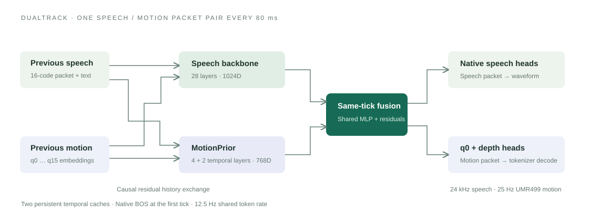

Represent motion.
A 25 Hz, 499D motion sequence becomes a 12.5 Hz packet with one semantic code and fifteen kinematic codes.
SPEECH + GESTURE · ONE SHARED CLOCK
DualTrack couples pretrained speech and motion priors through causal history exchange and same-tick fusion, generating synchronized speech–gesture token pairs.
WATCH & COMPARE
Original rendered examples with their corresponding audio.
No autoplay. Play one clip at a time.
HOW IT WORKS

A 25 Hz, 499D motion sequence becomes a 12.5 Hz packet with one semantic code and fifteen kinematic codes.
Separate semantic and full-motion histories feed a hierarchical temporal-and-depth autoregressive prior.
Previous-packet exchange and same-tick residual fusion couple a speech backbone with the motion prior.
Comparison gallery. DualTrack: 22 English, 6 Spanish, 9 Chinese, and 6 Japanese clips. GELINA: the same 22 English and 6 Spanish inputs. Chinese and Japanese are shown for DualTrack only. The two models may produce different durations; playback is not time-stretched.
Perceptual-study gallery. 28 matched English/Spanish triplets: ground truth, GELINA, and DualTrack. These are the original study assets, displayed here with source labels. Each version includes combined audio/video, motion-only video, and speech-only audio.
Rendering. The comparison clips use the original 960 × 960 mesh renders at 30 FPS. Study clips use neutral 720 × 720 renders. The rendered video frame rate is distinct from the model’s 12.5 Hz token clock and 25 Hz decoded motion. No fixed-foot or fixed-pelvis postprocessing variants are substituted.